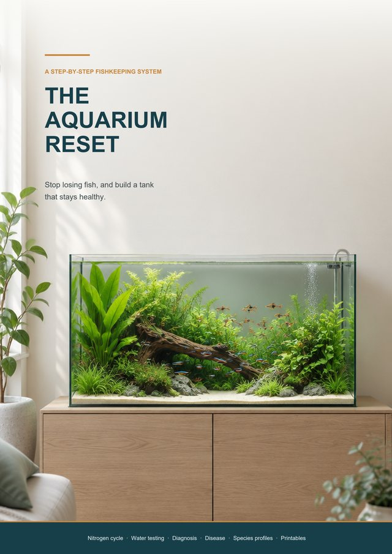

Freshwater aquariums
Start a freshwater tank your fish will actually thrive in
A beginner fishkeeping system that starts with the thing most guides skip: why new fish die. Cycling, testing, stocking and maintenance, in the order you need them.
The sample opens as a PDF. No sign-up and no email needed.
What is inside
- The nitrogen cycle in plain English, and how to cycle a tank properly
- Which water tests matter and what each number should be
- Choosing a tank, filter and heater without overspending
- Stocking: five questions to ask about every fish before you buy it
- Fish often sold to beginners that should not be
- Printable cycle log, water test log and stocking plan